What is on the screen, and why
Every screen of the live demo, with each part pointed at and explained — what it is, why it is there, and how it got that value. Written so you can present it without needing to remember anything.
Before you read on: save the screenshots
The images are not in the repository yet. Save your sixteen screenshots into
docs/walkthrough/screenshots/ named 01.png through
16.png, in the order below. Every arrow on this page is placed for a
1920×1032 capture, so save them at the size you took them.
| File | Which screenshot | How to recognise it |
|---|---|---|
| 01.png | Round 1, top of Live stream | All four at 1.000, blue banner |
| 02.png | Round 1, scrolled down | Chart almost empty, one event in the log |
| 03.png | Round 10 | Slider at 9, delta chips read +0.000 |
| 04.png | Round 55 | Red banner, all four show 0/20 and 0.623 |
| 05.png | Round 80, top | Two arms at 20/20, two at 0/20 |
| 06.png | Round 80, gate panel | Three bars, R = 0.05, two verdict boxes |
| 07.png | Event log, filled | Rows reading VETO, DRIFT, PHASE |
| 08.png | Summary tab, top | Four columns, green result banner |
| 09.png | Summary, scrolled | Same numbers plus the full chart |
| 10.png | Look closer, both charts | Orange crosses; three coloured check lines |
| 11.png | Round-by-round decisions | Table of rounds 36 to 45 |
| 12.png | Explain how this works | The five-measures table |
| 13.png | Show the maths, upper | The z, A and T formulae |
| 14.png | Show the maths, lower | P, S, the decision, the update rule |
| 15.png | Four steps and caveats | Green "one number to quote" banner |
| 16.png | Round 37, sliders open | Advanced settings expanded in the sidebar |
"Four intrusion detectors, the same real traffic, the same model. The only thing that differs is what each one is allowed to learn from — and by the end, two of them have forgotten how to catch an attack they were trained on."
Round 1 — the starting state
pre_attack · nothing has happened yetRound 1, top of Live stream
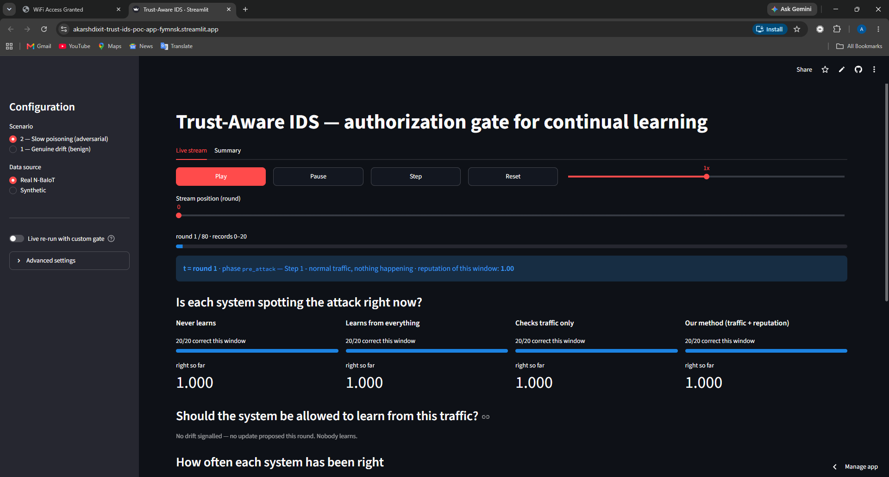
- The two choices that define the run
What Scenario 2, slow poisoning, on real N-BaIoT data.Why Scenario 1 is the benign-drift control; scenario 2 is the adversarial one that produces the result. Real rather than synthetic, because synthetic proves only that the code runs.How These two radio buttons pick which recorded log the page replays. Everything else on screen follows from them.
- Transport controls
What Play, Pause, Step, Reset, and a speed control.Why The demo is a replay of a completed run, not a live computation. That means you can pause on the exact round that matters instead of hoping it appears.How The run was executed once and every decision written to a log file. Play advances an index through that log.
- Round 1 of 80 · records 0–20
What The clock. One round is a window of 20 consecutive network records.Why The detector does not decide per packet — it batches into windows, because the evidence signals are statistics over a window and need more than one sample.How 80 rounds × 20 records = 1,600 records, after a separate 400-record calibration block that trained all four arms identically.
- The phase banner — blue means safe
What States the round, the phase name, a plain-English description, and this window's reputation.Why Without it, the audience cannot tell whether what they are seeing is normal traffic or an attack in progress. The colour does that job before anyone reads the words.How Blue for benign phases, red for attack phases. Reputation reads 1.00 here because this traffic really is benign.
- The four detectors, side by side
What Left to right: never learns, learns from everything, checks traffic only, ours. Each shows how many of this window's 20 records it classified correctly, and its running accuracy.Why They are in a fixed order all the way through, so the audience learns the positions once. The rightmost column is always ours.How All four are at 20/20 and 1.000 because they were trained on the same calibration data and nothing has yet happened to separate them.
- "No drift signalled — nobody learns"
What The gate was not consulted this round.Why This is important and easy to miss. The system does not adapt continuously — it adapts only when something changes. In steady state no update is proposed to anyone, so there is nothing to authorize.How A change detector watches the frozen arm's error stream. It has not fired, so no adaptation window is open.
"Everything starts identical. Any difference you see later was caused by exactly one thing — whether that detector was allowed to learn from a particular window."
The chart and the event log
Round 1, scrolled down
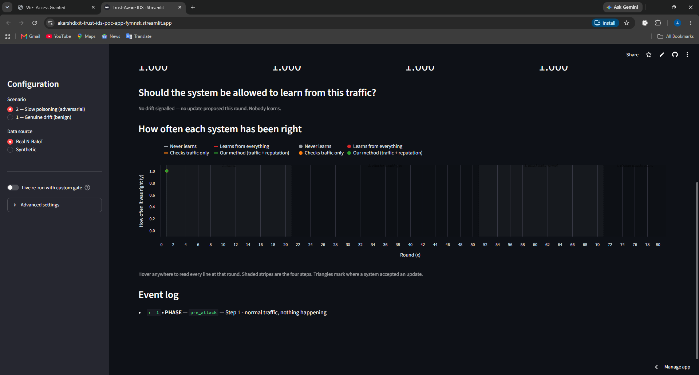
- The chart grows with the playhead
What A single dot at round 1, value 1.0.Why The chart draws only rounds that have already been played, so the audience watches the lines being written rather than reading a finished result. A finished chart gives the ending away.How The chart is redrawn each round from the log slice up to the current index.
- Each detector appears twice in the legend
What Four names as line swatches, then the same four as dot swatches.Why Not a bug — the chart has a line layer and a hover-point layer, and the charting library labels both.How If asked, say the points appear on hover so you can read exact values; the duplicate legend is a side effect of that.
- The axis already spans all 80 rounds
What The x-axis is fixed from the start even though only one round is drawn.Why Deliberate. If the axis rescaled every round, the lines would appear to move around and the phase bands would slide. A fixed axis means what you see at round 40 is in the same place at round 80.How The x domain is pinned to the full round count rather than to the data drawn so far.
- The event log
What One entry so far: the phase change at round 1.Why This is the audit trail. Everything consequential — a phase change, the change detector firing, a veto — is recorded here with its round number, so nothing has to be taken on trust.How Newest entries appear at the top, so as the run proceeds you read the story downwards in reverse. Mention that before it fills up.
Round 10 — still nothing
Round 10
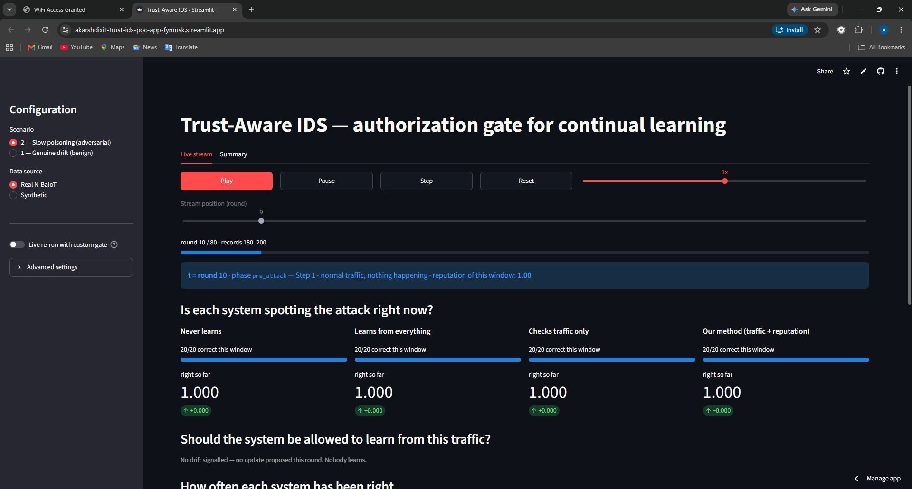
- The playhead has moved
What The scrubber sits at 9, showing round 10 of 80.Why You can drag this to jump anywhere. In the review, use it to skip the quiet stretch rather than waiting through it.How Drag to a round and the whole page redraws for that moment in the run.
- Records 180 to 200
What Round 10 covers the 180th to 200th record of the post-calibration stream.Why Shows the windows are consecutive and non-overlapping — the detector sees each record exactly once.How Round n covers records 20(n−1) to 20n.
- The delta chips read +0.000
What Change in running accuracy since the previous round: zero for all four.Why Confirms nothing is drifting. When these turn red later, that is the moment things start going wrong — the chips are the earliest visible warning.How Current running accuracy minus the previous round's.
- Still no drift
What Ten rounds in, the change detector has not fired once.Why Worth saying out loud: a system that proposed updates constantly would be handing the attacker constant opportunities. Adapting rarely is itself part of the defence.How No error signal has appeared, because the traffic genuinely has not changed.
Round 55 — everyone is at zero
post_poison · the most misread screen in the demoRound 55
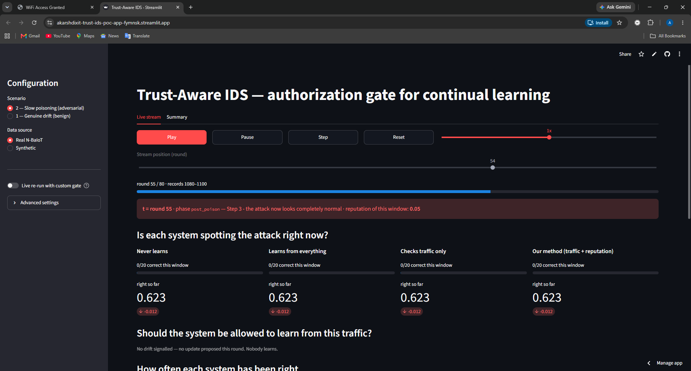
- The banner is red now
What Phase
post_poison, "the attack now looks completely normal".Why The attacker has finished walking their traffic across into the benign region. The disguise is complete.How Real attack records were interpolated toward real benign records over the preceding thirty rounds. At this point the interpolation has reached the benign end. - Reputation is still 0.05
What The one number that has not changed.Why This is the whole argument in one value. The traffic now looks completely benign, but it is still going to the same command-and-control server. The attacker changed everything they control and nothing they don't.How Reputation is attached to the record's origin, not computed from its features, so disguising the traffic cannot move it.
- All four score 0 out of 20 — including "never learns"
What Every detector gets every record in this window wrong.Why Pre-empt this before you are asked. It is not a failure of the method. In this phase the attack records are numerically identical to benign records while still carrying an attack label — we verified this to a relative difference of 4.7×10-16. No detector that looks only at traffic can score above zero here, including the frozen one that never updated at all.How The interpolation reached its benign endpoint exactly, so these are benign feature vectors with an attack label.
- All four running accuracies identical at 0.623
What No detector has separated from the others yet.Why Because this phase punishes all of them equally, overall accuracy is a misleading headline for this experiment. Say so here, and then give them the number that does mean something at round 80.How They diverge only when one of them learns something the others did not.
If you present overall accuracy as the headline, an examiner will correctly point out that your frozen baseline scores 55% and ask what the method achieved. Lead with repeat-attack detection instead, and explain this phase as the reason.
Round 80 — the split
recovery_check · this is the screen the whole demo exists forRound 80, top
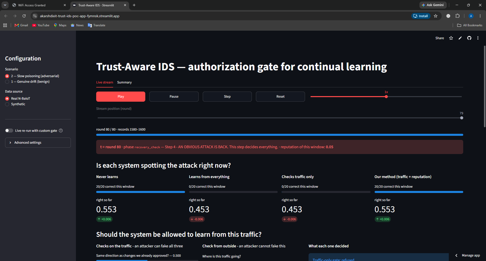
- Step 4 — an obvious attack is back
What Full-strength, unmodified Mirai traffic — the same attack the model was calibrated on.Why This is the test that matters. Anyone can look good while the attack is subtle. The real question is whether the detector, after the campaign, can still recognise something it definitely used to know.How Raw records straight from the attack capture file, with no interpolation applied.
- Never learns — 20 out of 20
What The frozen detector catches every record.Why Of course it does. It never learned anything after calibration, so there was nothing to corrupt. This is the safety ceiling.How It refused, structurally, all 80 rounds.
- Learns from everything — 0 out of 20
What The ungated detector catches nothing.Why It accepted 24 updates during the campaign, several of which told it that attack traffic was normal. It has been taught to ignore this attack.How Every proposal accepted, no checks at all. This is the damage floor.
- Checks traffic only — also 0 out of 20
What The gated detector that inspects only the traffic. Also catches nothing.Why This is the finding. It had a gate. It rejected 19 of 24 proposals. And it ended up exactly as damaged as the arm with no gate at all — because the five it accepted were the ones that mattered.How It accepted at rounds 40, 72, 73, 74 and 75. Five bad decisions were enough.
- Ours — 20 out of 20
What Full detection retained.Why It refused all 24 proposals, because the reputation channel was bad on every one of them. Its model is byte-identical to the frozen arm's.How The reputation veto fired on every drift-active round.
- The pairing in the running accuracies
What 0.553, 0.453, 0.453, 0.553 — the arms pair up exactly.Why Ours does not merely beat the ungated arm; it is numerically identical to the frozen arm. That is a stronger claim, and it is only possible because a refusal changes nothing at all — not the model, not the baseline, not the reference direction.How Identical inputs plus zero accepted updates gives an identical model.
"Both of these gates saw the same traffic and the same evidence. One of them also asked where the traffic was going. That is the entire difference between the third column and the fourth."
Inside the gate at that moment
Round 80, gate panel
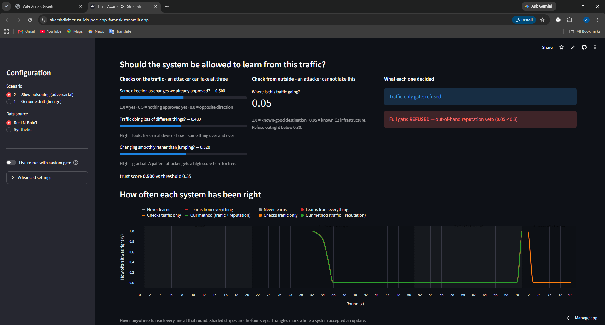
- Left column — "an attacker can fake all three"
What The three traffic checks with their values: same direction 0.500, mixed traffic 0.480, smooth change 0.520.Why The heading is doing argumentative work. Every one of these is computed from the traffic being judged, so a patient attacker shapes all three. Making them cleverer does not help.How Geometric statistics over the window, computed in a scaling frozen at calibration time so the attacker cannot move the ruler.
- Middle — "an attacker cannot fake this"
What Reputation: 0.05.Why The asymmetry the whole project rests on. The attacker controls what the traffic looks like, not where it has to go.How 1.0 means a known-good destination, 0.05 a known command-and-control server, and anything under 0.30 is refused outright.
- Traffic-only gate: refused
What On this round the traffic-only gate also refuses.Why Be accurate about this — do not overclaim. Round 80 is not one of the rounds where they disagreed. Its trust score of 0.500 simply fell below the 0.55 bar, so it refused on its own evidence.How To show the disagreement, scrub back to round 72 or 40. Those are the rounds where the two verdict boxes differ.
- Full gate: REFUSED — reputation veto (0.05 < 0.3)
What Our gate refuses for a different reason, and states it.Why The reason string is the audit trail. An operator can later ask why the detector did not adapt on a given day and get an answer, rather than a score.How The veto is checked first. If reputation is below threshold the trust score is never consulted at all.
- "trust score 0.500 vs threshold 0.55"
What The three bars combined: 0.40×0.500 + 0.30×0.480 + 0.30×0.520 = 0.500.Why Shows the arithmetic is not hidden. If someone asks how the score is formed, this line answers it on screen.How A fixed weighted sum. The weights are untuned defaults chosen before any result was seen — say so if asked.
- The chart, now complete
What Green holds at the top through the final phase; orange drops away.Why This is the visual the audience remembers. One line stays up, one falls, and everything else on the page explains why.How Green is drawn over grey and orange over red, because each pair is exactly coincident.
The event log — the audit trail
Event log, filled
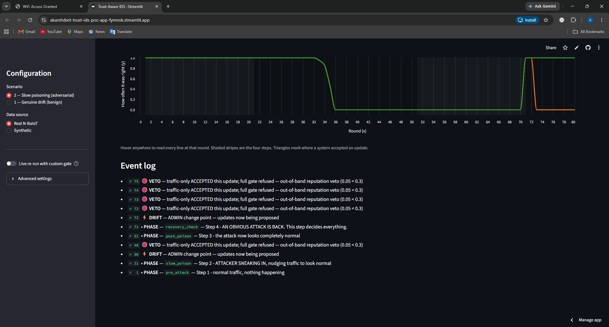
- Four VETO entries, rounds 72 to 75
What "traffic-only ACCEPTED this update; full gate refused — out-of-band reputation veto (0.05 < 0.3)".Why These four rounds are inside the repeat-attack phase. The traffic-only gate was accepting updates while being tested on the attack itself — being taught the attack was normal at the very moment it needed to catch it.How The log records a VETO whenever the two gates disagree, which makes the disagreements findable without reading every round.
- DRIFT at round 72
What The change detector fired, opening a fresh adaptation window.Why Explains why proposals reappear at 72 after a quiet stretch. The frozen detector suddenly started getting things right again when the real attack returned, and that change in its error rate is itself a change point.How A fired change point opens a 15-round window during which updates are proposed each round.
- VETO at round 40 — the clean comparison
What The first disagreement, in the middle of the poisoning phase.Why This is the round to demonstrate. At round 40 both gates had accepted nothing yet, so both were looking at numerically identical evidence — attribution 0.500, topology 0.784, stability 0.459, trust 0.573. One accepted, one refused. Nothing but the reputation channel differs.How 0.573 cleared the 0.55 bar. The veto fired anyway.
- DRIFT at round 36
What The first change point of the whole run.Why Note how late it is. The poisoning began at round 21, but the attacker moved slowly enough that it took fifteen rounds to register as a change at all. That patience is the attack.How The change detector needs the frozen arm's error rate to shift materially before it fires.
- The PHASE entries frame the story
What Four phase markers at rounds 1, 21, 51 and 71.Why They let you narrate from the log alone: normal, attacker sneaking in, attack looks normal, obvious attack returns.How Newest first, so read bottom to top for chronological order. Say this before you scroll it.
Summary tab — the numbers for the report
Summary tab, top
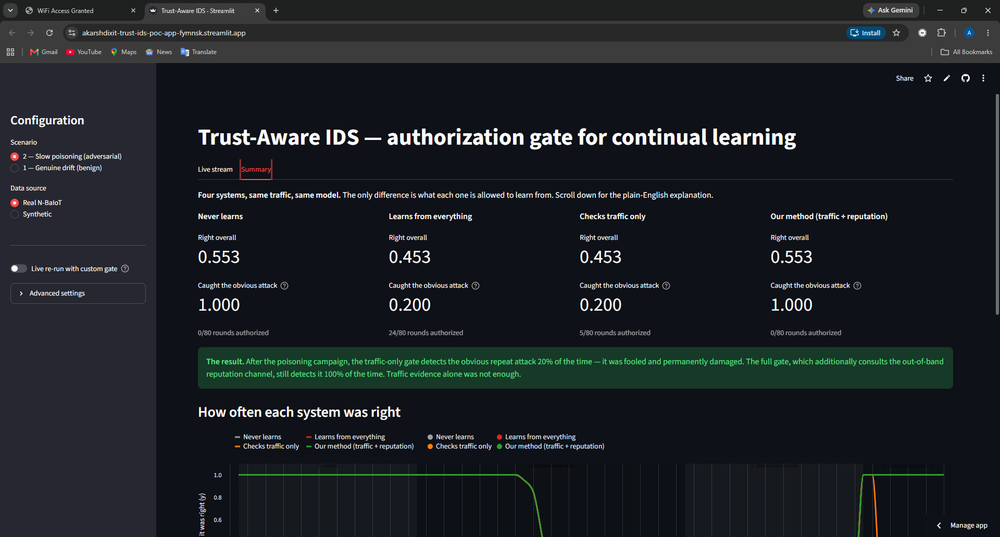
- The Summary tab
What The second of two tabs. Live stream is the demo; Summary is the evidence.Why Switch here after the replay so the audience sees the finished numbers only once they understand how they were produced.How Same log, aggregated instead of replayed.
- "Four systems, same traffic, same model"
What The controlled-experiment claim, in one line.Why Every comparison stands or falls on this. If the arms differed in more than one way, none of the numbers below would be attributable.How One orchestrator, one data stream, one change trigger driven by the frozen arm, four gate policies.
- Right overall — 0.553 / 0.453 / 0.453 / 0.553
What Accuracy across all 80 rounds.Why Present this as context, not as the headline. It is dragged down for everyone by the phase where the attack is indistinguishable from benign traffic.How Prequential — every record predicted before the model could train on it.
- Caught the obvious attack — 1.000 / 0.200 / 0.200 / 1.000
What The number to quote. Detection during the final phase.Why It measures durable damage rather than momentary evasion — whether the detector still knows something it definitely used to know.How Mean windowed accuracy over rounds 71 to 80.
- Rounds authorized — 0, 24, 5, 0
What How many updates each arm accepted.Why The most quietly damning line on the page. The traffic-only gate refused 19 of 24 proposals — it was working hard — and it still ended up as damaged as the arm that refused nothing.How Counted from the decision log.
- The green result banner
What The finding as a sentence, generated from the numbers above it.Why If you read only one thing aloud from this screen, read this.How The percentages are pulled from the log, not typed in, so they cannot drift out of step with the data.
Summary with the chart
Summary, scrolled
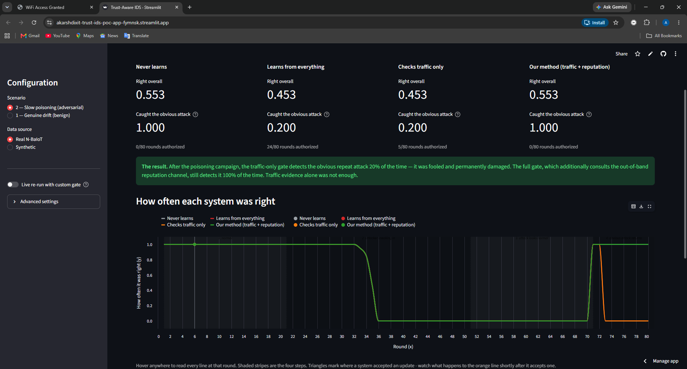
- The metric row again
What Two figures per detector — overall, then the one that matters.Why Both are shown deliberately. Hiding the weaker number would invite the question anyway; showing both and explaining which to use is stronger.How Hover the small question marks for the definition of each.
- The result banner
What 20% against 100%, stated plainly.Why Ends with the honest limiting sentence: "Traffic evidence alone was not enough." That is the claim — not that the attacker was detected.How Composed from the repeat-attack figures directly above.
- The chart in full
What All 80 rounds, four lines, two visible because each pair coincides.Why Point at the flat stretch in the middle — that is the phase where nothing can win — then at the single divergence near the right edge. The whole result is that one gap.How Hover anywhere for a tooltip giving the round and all four values at once.
Trust score against reputation
Look closer, both charts
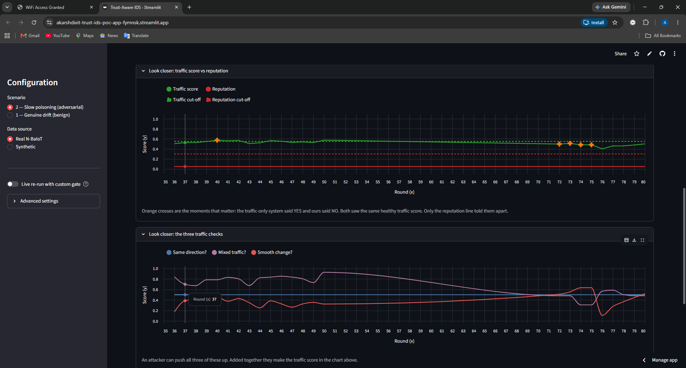
- Green — the traffic score, wobbling around 0.5
What The combined verdict of the three traffic checks, round by round.Why Look how unremarkable it is. Through a sustained poisoning campaign the traffic evidence never looks alarming. It hovers right around the decision boundary and crosses it occasionally.How The weighted sum, drawn from the log for every drift-active round.
- Red dashed — the veto threshold at 0.30
What The line below which an update is refused outright.Why A defender-set parameter, drawn so the audience can see the decision rule rather than take it on trust.How Fixed at 0.30 for the whole run.
- Red solid — the reputation, flat at 0.05 throughout
What A perfectly flat line along the bottom, never once rising toward the threshold.Why This is the picture of the whole idea. While the green line wanders about — the attacker shaping what they control — the red line does not move at all, because they cannot shape it. It sits below the cut-off from the first round to the last.How Every window in these phases originates from the attack capture, so its reputation is 0.05 by construction.
- Orange crosses — where the two gates disagreed
What A cluster of four near rounds 72 to 75.Why Each cross is a moment where the traffic-only gate said yes and ours said no. These are the four during the repeat-attack phase — the ones that did the lasting damage.How Marked wherever the two verdicts differ, so they can be found at a glance.
- The lone cross at round 40
What One isolated disagreement during the poisoning phase.Why This is the cleanest one. Both gates saw identical evidence there, so it isolates the contribution to a single decision. It is also the one that started the corruption.How Trust 0.573 against a 0.55 bar. Accepted by one gate, vetoed by the other.
- The lower chart — the three checks separately
What Attribution flat at 0.500, topology high and falling, stability rising through the campaign.Why Watch the stability line climb. That is the attacker being rewarded for patience — the slower they move, the better that score gets, and it costs them nothing.How Attribution sits at exactly 0.500 for our gate all run, because it never authorized anything and so never built a reference direction to compare against.
A green line drifting around the threshold, and a red line pinned to the floor beneath it. One is what the attacker controls; the other is what they don't.
The round-by-round decision table
Round-by-round decisions
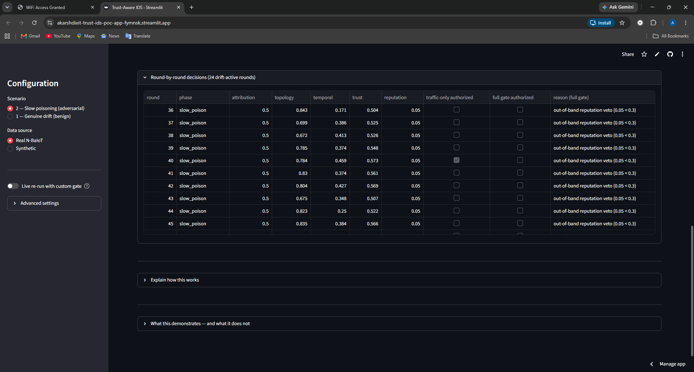
- All 24 drift-active rounds, fully itemised
What Every round where an update was proposed, with all three evidence values, the trust score, the reputation, both verdicts and the stated reason.Why Nothing about the mechanism is hidden. If an examiner wants to check the arithmetic on any round, it is on screen.How The visible rows are 36 to 45 — the poisoning phase. Scroll within the table for the rest.
- Round 40 — the one ticked box
What In the "traffic-only authorized" column, every box is empty except round 40.Why Point at this. One tick, in a column of empties, is the moment the traffic-only gate was fooled during the poisoning phase. Its trust score reached 0.573 — just over the 0.55 bar — and it let the update through.How Everything else on that row is identical to our gate's values. Only the decision differs.
- The "full gate authorized" column is entirely empty
What Not one tick, on any row.Why Our gate refused all 24 proposals. Note that this is a real cost as well as a benefit — in this scenario it was correct every time, but a gate that refuses everything would look identical, which is exactly why the benign-drift scenario matters and why its null result is reported honestly.How Reputation was 0.05 on every drift-active round, so the veto fired every time.
- The reason column
What "out-of-band reputation veto (0.05 < 0.3)" repeated down the table.Why Every refusal carries a machine-written explanation. This is what makes the decision auditable rather than a black box.How The gate returns a reason string with every decision, and it is stored in the log.
- The trust column hovers near the threshold
What 0.504, 0.525, 0.526, 0.548, 0.573, 0.561, 0.569, 0.507, 0.522, 0.566.Why Look how close these are to 0.55. The traffic evidence is not confidently rejecting the poisoning — it is essentially undecided, drifting either side of the line. That is what "the attacker is shaping the evidence" looks like numerically.How Only one of these ten crossed the bar. A slightly different threshold would have changed which — say so before you are asked.
The built-in explanation
Explain how this works
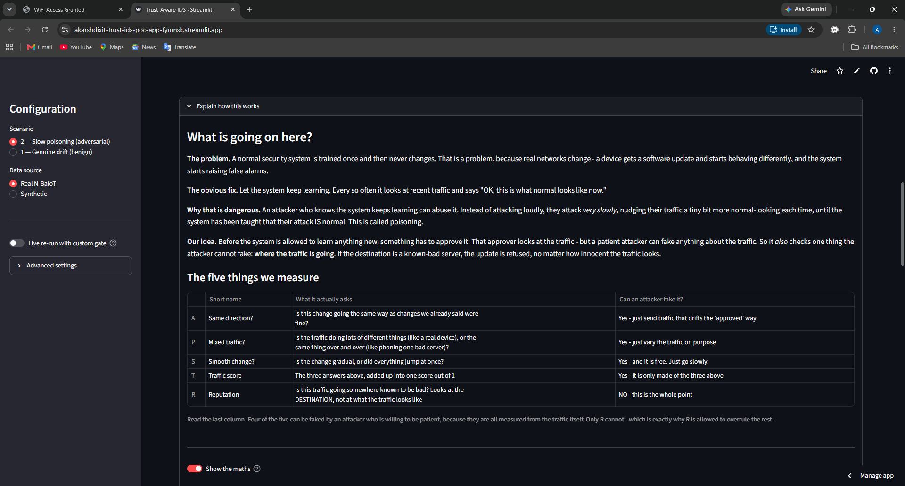
- The problem in four paragraphs
What Problem, obvious fix, why the fix is dangerous, our idea.Why Built into the app so you never have to reconstruct the motivation from memory under pressure. If a panel member joins late or asks you to start again, open this.How A collapsible section, closed by default so it does not clutter the demo.
- The five-measures table
What A, P, S, T and R, each with what it actually asks in plain words.Why Gives the audience the vocabulary before any symbol appears. Nobody has to guess what "attribution consistency" means.How The rows are ordered so that T follows the three it is made from, and R sits apart at the bottom.
- The final column: "Can an attacker fake it?"
What Yes, yes, yes, yes — then NO.Why The entire argument, readable in one glance. If you have thirty seconds to justify the project, point here.How The four yeses are all measured from the traffic. The one no is not.
- "NO — this is the whole point"
What The reputation row's answer.Why Also the place to volunteer the honest caveat: in this proof of concept the reputation is simulated from ground truth, because the dataset has no such field. It is closer to an oracle than a real feed would be.How Say the claim carefully — this demonstrates what an authorization step achieves once an independent signal exists, not that we detect the attacker.
Raising the simulated-reputation caveat yourself reads as rigour. Having it extracted from you reads as a gap you hoped nobody would find. Same fact, opposite impression.
The maths, upper half
Show the maths, upper
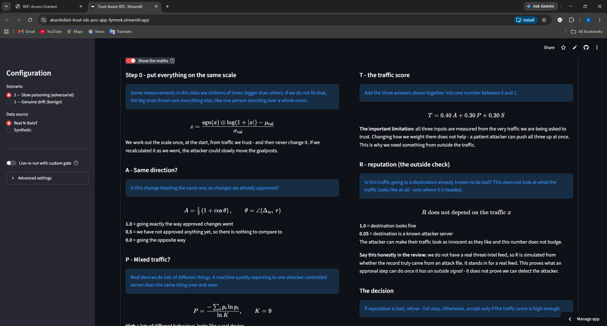
- "Show the maths" is off by default
What A toggle controlling whether formulae appear at all.Why The same page serves a technical examiner and a non-technical one. Leave it off; turn it on only if someone asks for the definition.How Every concept has a plain-English statement above its formula, so the page still reads correctly with the maths hidden.
- Step 0 — the calibrated feature space
What A signed logarithm, then standardisation by calibration statistics.Why Not preprocessing — a trust boundary. If this scaling were refitted on live data, an attacker controlling the live data would control the measuring frame and could move the goalposts, then measure themselves against them.How Fitted once on calibration benign records and then frozen. The implementation offers no way to refit it.
- A — attribution consistency
What Half of one plus the cosine of the angle between this window's shift and the average of previously approved shifts.Why Asks whether this change resembles changes already accepted as genuine.How Returns exactly 0.5 when nothing has been approved yet — a deliberate neutral rather than an invented score. That is why our gate reads 0.500 all run.
- T — the weighted sum
What 0.40A + 0.30P + 0.30S.Why The important sentence is underneath it: all three inputs come from the traffic, so reweighting cannot fix the problem. A patient attacker raises all three at once.How Untuned defaults, fixed before any result was seen. Concede readily that tuning them was not attempted.
- R does not depend on x
What Stated as a formal property rather than a description.Why This is the mathematical content of the contribution. Everything else in the gate is a function of the traffic; this one thing is not, and that independence is what makes it worth consulting.How If someone challenges the novelty, this line is the answer.
- "Say this honestly in the review"
What The caveat written into the app itself.Why Built in deliberately so it cannot be quietly skipped during a presentation.How Read it out. It costs nothing and buys credibility for everything else.
The maths, lower half
Show the maths, lower
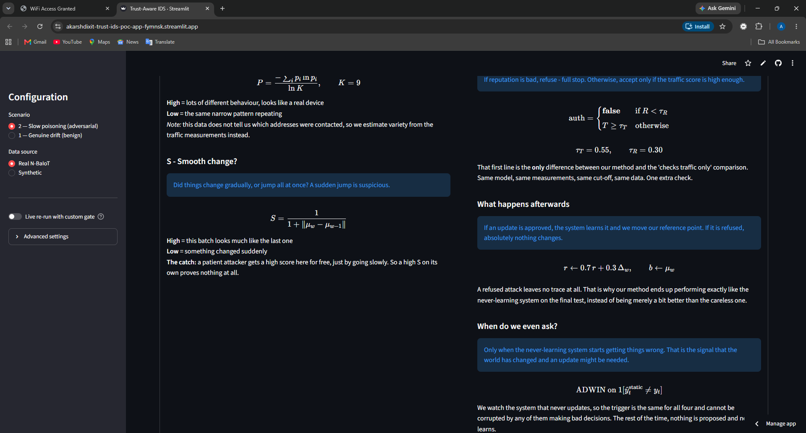
- P — topology, as normalised entropy
What Entropy of a nine-bin histogram, divided by the maximum possible.Why A stand-in measure, and the note below it says so: the dataset carries no address information, so communication variety is estimated from the spread of the traffic statistics instead.How Dividing by the maximum puts it on the same 0-to-1 scale as the other two so they can be weighted together.
- S — stability, and the catch beneath it
What One over one-plus the distance moved since the last window.Why Read the line underneath aloud: "a patient attacker gets a high score here for free, just by going slowly". A defence that rewards gradualness rewards exactly the behaviour this attacker exhibits.How This is the clearest single illustration of why traffic-derived evidence is structurally insufficient.
- The authorization rule
What Two cases: false if reputation is below threshold; otherwise, is the trust score high enough.Why The first line is the entire contribution. Delete it and you have the traffic-only comparison arm — same model, same evidence, same threshold, same data. One extra check.How The veto is evaluated first, so a bad reputation short-circuits the trust score entirely.
- The two thresholds
What 0.55 for trust, 0.30 for reputation.Why Defender-set, and both untuned. Round 40 cleared the trust bar at 0.573 — a slightly higher bar would have refused it and the traffic-only arm might have survived. Concede that the result demonstrates a failure mode, not a failure rate.How Both are adjustable live from the sidebar, which is screenshot 16.
- The update rule
What On acceptance, the reference direction moves 30% toward this window's shift and the baseline jumps to this window's mean.Why This is how the gate learns what approved drift looks like — and also how it can be corrupted, since an accepted poisoned window becomes part of the reference.How Exponential moving average with weight 0.3.
- "A refused attack leaves no trace at all"
What On refusal, nothing changes — not the model, not the baseline, not the reference direction.Why This is why our arm ends numerically identical to the frozen one. It also stops corruption compounding: the traffic-only gate's attribution score climbed from 0.500 to 0.956 after it accepted at round 40, because a poisoned window had become its reference. Accepting one bad update made the next one easier to accept.How The asymmetry between the accept and refuse paths is a deliberate design decision, not an implementation detail.
- The drift trigger
What A change detector watching the frozen arm's error stream.Why Deliberately the arm that never updates, so the trigger is identical for all four and cannot be corrupted by any arm's own bad decisions. Without this the comparison would not be controlled.How It is also why the benign-drift scenario returned a null result — a benign-to-benign shift produces no errors, so nothing fires.
The four steps, and the caveats
Four steps and caveats
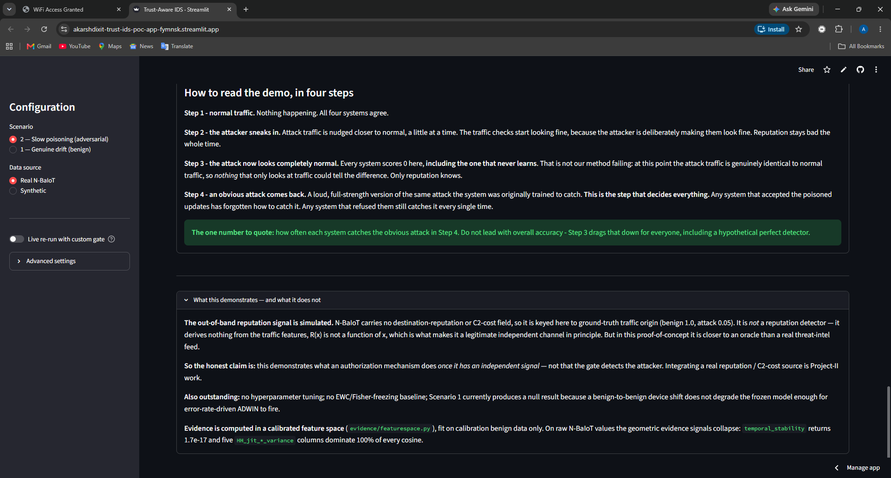
- Step 1 — normal traffic
What All four systems agree; nothing is happening.Why Establishes the baseline so any later difference is visibly caused by the campaign.How Rounds 1 to 20.
- Step 2 — the attacker sneaks in
What Attack traffic nudged toward normal, a little at a time.Why The traffic checks start looking fine because the attacker is deliberately making them look fine. Reputation stays bad throughout.How Rounds 21 to 50. The first change point fires at 36; the first disagreement is at 40.
- Step 3 — the attack looks completely normal
What Every system scores zero, including the one that never learns.Why Stated in the app so you are not accused of hiding it. At this point the attack traffic is genuinely identical to normal traffic; nothing that only looks at traffic could tell the difference.How Rounds 51 to 70.
- Step 4 — an obvious attack comes back
What The step that decides everything.Why Whoever accepted the poisoned updates has forgotten how to catch it. Whoever refused them still catches it every time.How Rounds 71 to 80.
- "The one number to quote"
What Repeat-attack detection, not overall accuracy.Why With the reason given: step 3 drags overall accuracy down for everyone, including a hypothetical perfect detector.How If you remember one sentence from this whole page, make it this one.
- "What this demonstrates — and what it does not"
What The simulated reputation channel, the honest framing of the claim, no tuning, no elastic-weight baseline, and the scenario-1 null result.Why Every one of these would be found by a careful examiner. Disclosed, they demonstrate rigour; extracted, they look like gaps.How Open this panel yourself at the end rather than waiting to be asked.
Changing the gate live
Round 37, sliders open
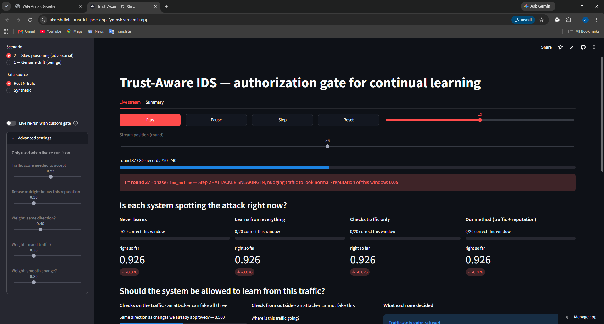
- Advanced settings
What The gate's parameters, exposed and adjustable.Why Collapsed by default so the demo is not cluttered, but available to answer "what if you had chosen differently?" — which is a question you should expect.How They apply only when live re-run is enabled, which recomputes the whole pipeline rather than replaying the log.
- The two thresholds
What Trust score needed to accept, 0.55. Refuse below this reputation, 0.30.Why Here is the demonstration to run if you have two minutes spare. Drop the reputation threshold below 0.05 and our gate stops vetoing — it degrades into the traffic-only arm and gets poisoned in exactly the same way. That proves the veto is load-bearing rather than decorative.How Move the slider, wait for the re-run, and show the repeat-attack number falling from 1.000 to 0.200.
- The three weights
What 0.40, 0.30, 0.30 across attribution, topology and stability.Why Useful for a second point: reweighting these does not rescue the traffic-only gate, because all three are attacker-shaped. You can demonstrate that rather than assert it.How They are exposed precisely so a sceptic can try to fix the problem by tuning and find that they cannot.
- Round 37, mid-poisoning
What The attacker is active and the change detector has already fired at 36.Why A good round to pause on before stepping forward to 40, where the first disagreement happens.How Step forward three rounds from here and watch the two verdict boxes diverge.
- All four already at zero here
What 0/20 this window, 0.926 running accuracy for all four.Why By round 37 the interpolation has already carried the attack across the decision boundary. The damage to detection has begun; the damage to the model has not happened yet.How The running accuracy is still high because most of the run so far was clean.
A five-minute script
| Time | Screen | What you say |
|---|---|---|
| 0:00 | 01 | Four detectors, same traffic, same model. Only difference is what each may learn from. |
| 0:30 | Scrub to 40 | First disagreement. Identical evidence, opposite decisions. Only reputation differs. |
| 1:30 | 04 | Everyone scores zero here — including the frozen one. Explain why, before being asked. |
| 2:15 | 05 | The split. Two at 20/20, two at 0/20. The gated traffic-only arm is as damaged as the ungated one. |
| 3:00 | 10 | Green line wanders; red line pinned to the floor. One is shaped by the attacker, one is not. |
| 3:45 | 08 | 0.200 against 1.000. Quote repeat-attack detection, not overall accuracy. |
| 4:15 | 15 | Open the caveats yourself. Simulated reputation, no tuning, one null result. |
| 4:45 | — | Close on: traffic evidence is insufficient in principle, not merely in practice. |
Questions you will get
"Your baseline only scores 55%. Is the model any good?"
Overall accuracy is depressed for every arm by the phase where the attack records are numerically identical to benign ones. In that phase no traffic-based detector can exceed zero. The meaningful figure is repeat-attack detection: 1.000 against 0.200.
"The reputation signal is doing all the work. Isn't that cheating?"
Partly, and we say so. It is simulated from ground-truth origin, so it never errs. The claim is not that we detect the attacker — it is that an authorization step converts an independent signal into a refusal that traffic evidence alone could not produce. Making that channel realistic is the first item of future work.
"Why not just freeze the model? It scores the same as yours."
Because it is safe by being useless — it cannot adapt to anything. Ours matches it on safety while retaining the ability to accept legitimate updates. The honest weakness is that our benign-drift scenario failed to demonstrate that on real data, and we report the null result rather than hiding it.
"Would a higher threshold have saved the traffic-only gate?"
Possibly. Round 40 cleared the 0.55 bar at 0.573. That is why we present this as a demonstrated failure mode rather than a quantified failure rate — a sensitivity sweep is future work.
"What is actually novel here?"
Not the classifier, the change detector, or poisoning as a concept. What is new is the authorization stage as an explicit, recorded, refusable step whose deciding input is not a function of the data being judged, together with the no-residue rule and the measurement of durable damage after the attack ends.
"Why does your gate's attribution stay at exactly 0.500?"
Because it never authorized anything, so it never built a reference direction to compare against, and the signal returns a neutral 0.5 rather than inventing a score. The traffic-only gate's rose to 0.956 after it accepted at round 40 — a poisoned window had become its reference. That is the self-reinforcement finding.